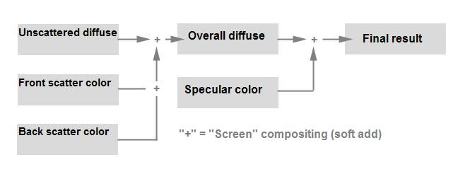
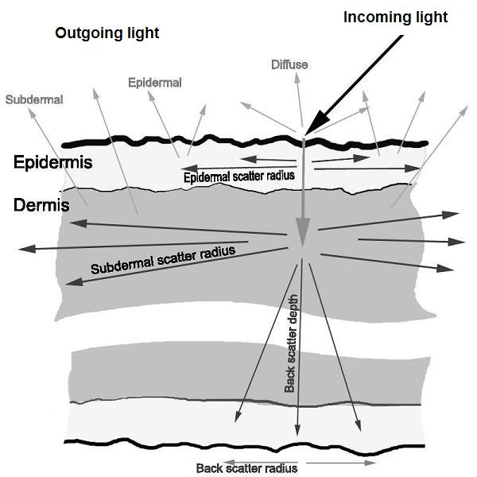

Phenomena
The supplied Phenomena are documented first since they are
sufficient for most practical usage. Expert users can create
their own Phenomena using these as templates or use the component
shaders as described in
Advanced Topics. These Phenomena
use structures to group the input parameters in logical groups,
which are automatically grouped by the user interface of
different OEM integrations of mental ray.
Fast Simple Phenomenon
This Phenomenon automatically (unless explicitly specified) generates
the required lightmaps, fills in the lightmap data, and shades
the objects as a general, translucent object with subsurface
scattering. The scattering is divided into two parts, one for the
front side of the object and one for the back.
In a sense, the shader works by layering several light
contributions on top of each other (see
misss_fast_shader)
to get a final result. What is important to keep in mind are these rules of
thumb:
- The bump map only affects the specular and
diffuse_color layers. The subsurface scattering happens
below the surface and is oblivious to the surface having
bumps.
- The overall_color affects all of the diffuse
contributions, but not the specularity:

The flow of color
misss_fast_simple_phen
material "misss_fast_simple_phen" (
color texture "lightmap",
color texture "depthmap",
string "lightmap_group",
scalar "lightmap_size",
integer "samples",
shader "bump",
struct "d" {
color "ambient",
color "overall_color",
color "diffuse_color",
scalar "diffuse_weight",
color "front_sss_color",
scalar "front_sss_weight",
scalar "front_sss_radius",
color "back_sss_color",
scalar "back_sss_weight",
scalar "back_sss_radius",
scalar "back_sss_depth"
},
struct "s" {
color "specular",
scalar "exponent"
},
struct "a" {
scalar "lightmap_gamma",
boolean "indirect",
scalar "scale_conversion",
scalar "scatter_bias",
scalar "falloff",
boolean "screen_composit"
},
integer "mode",
array light "lights")
- lightmap
depthmap - are normally not
specified. These are special parameters the shaders use to
communicate the name of the automatically created lightmaps
between themselves. Expert users can pass writable textures and
leave the lightmap_group and lightmap_size
parameters undefined. See
Automatic lightmap generation.
- lightmap_group
- is the scatter group name. A
lightmap/depthmap pair will be created internally and given this
name. All objects that should scatter light into each other
should be in the same scatter group. To conserve memory, use as
few scatter groups as possible. A person's hands, face, etc. can
use the same scatter group; even hands and faces of different
people. In general, different scatter groups should be used only
when using the same group would cause visible problems due to
objects incorrectly scattering into each other. Two characters
shaking hands, for instance, would need to have their hands in
different scatter groups. (Also see the technical note on
Network Rendering.
- lightmap_size
- is size of the lightmap expressed in
percent of render size. The lightmap is created in render space,
and is related to final rendered screen pixels. 50% or less is
often quite enough (and is the default), but if edge artifacts
appear, increase this value.
- samples
- sets how many samples from the lightmap are
considered (maximum) per rendered ray, ideally, a power of two.
32 is probably the lowest useful value, 128 is plenty. However,
if the scattering radii are large the sample count may need to be
increased to avoid image noise.
- bump
- allows passing any shader that perturbs the normal
for bumps. The shader's color output (if any) will not be
used.
- ambient
- is the ambient component or any additional
diffuse light added by any shader. This light will also be
included in the lightmap and get scattered like any other light
source and is hence the perfect place to add any HDRI light. The
HDRI light can be based on environment and occlusion maps.
- overall_color
- is the overall diffuse color. All
diffuse colors that follow below are multiplied with this global
color to yield the final result. This parameter is useful for
tinting the final computed diffuse color in a desired way or to
apply maps that attenuate all diffuse light. Moles in skin, for
example, block almost all underlying light (even scattered) and
would make sense applied here, as would dirt, textured-on
eyebrows, and such.
- diffuse_color
diffuse_weight - color and weight
(a simple multiplier for easier tweaking) of the normal Lambertian diffuse
lighting, which is layered on top of any underlying scattered diffuse light.
- front_sss_color
front_sss_weight - are the
color and weight for the front surface scattering.
- front_sss_radius
- is the scatter radius in the front
surface. Light will scatter this distance along the surface, in
whatever units the model is made, divided by the
scale_conversion parameter along the surface.
- back_sss_color
back_sss_weight - are the color
and weight for the back surface scattering, i.e. light going
through the object.
- back_sss_radius
back_sss_depth - are the
scatter radius and depth for which light from the back surface is
visible in the front surface. Normally, the radius and depth are
set to the same value (and if the depth is not specified, it
defaults to the radius) but can be set separately for increased
control.
- specular
exponent - specular color and Phong exponent
for the specular highlight.
- lightmap_gamma
- is the gamma curve of the light stored
in the lightmap. If this is 1.0, normal Lambertian diffuse light
is stored. If it is less than 1.0, the curve is 'flattened'
causing the light to spread out towards areas perpendicular to
the incoming light. If it is higher than 1.0, the curve is
'narrowed' causing the light to concentrate in areas directly
facing the light source. In most cases, a value between 0.4 and
0.8 is sufficient.
- indirect
- if true, includes any indirect lighting
(photons, final gathering, etc) in the lightmap to be scattered.
This takes additional render time and one should judge on a
case-by-case basis if the indirect light is significant enough
that seeing it scattered or not makes a big difference to justify
the extra rendering time.
- scale_conversion
- is a simple utility function allowing
linear division of all distances. Since scattering is distance
dependent, loading a material designed for a model made in inches
will not work on a model where the unit is meters, and vice
versa. Here one can pass the conversion factor.
- scatter_bias
- if set to 0.0 the scattering is completely
uniform. Positive values favor forward scattering, and negative
values favor back scattering. The allowed range is -1.0 to 1.0,
but the useful range is much smaller. A value of 0.1 (a slight
favoring of forward scattering) is a good start.
- falloff
- sets the shape of the distance falloff along
the scatter radius. Higher values yield a sharper falloff, and
lower values a smoother falloff, but also make the perceived
scatter distance shorter, so one must compensate by increasing
the actual scatter distance for a slightly 'softer' look. For
high values (1.0 to 10.0), almost all samples within the scatter
radius are weighted equally. For low values (0.1 to 1.0), the
samples near the edge of the scatter radius are weighted
less.
- screen_composit
- when turned on, chooses Screen
compositing. When simply adding together the contribution of many
layers of light, it is very easy to quickly blow out and
over-expose into white, but the human eye is inherently nonlinear
and perceives intensities in a different way. This option allows
use of what is known in many compositing applications as a screen
transfer mode between the layers, which yields a softer, more
pleasing result. If it is turned off, normal addition is used. If
rendering in a high dynamic range and a proper tone-operator is
applied in the final output stage already compressing the final
luminance this should be turned off.
- mode
- is the mode selector for the
light lists.
- lights
- is the direct light list.
Fast Skin Phenomenon
A more advanced Phenomenon for skin
shading includes three-layer scattering and skin-specific
specularity functionality. It shares many parameters with
misss_fast_simple_phen.

The structure of the skin shader
Skin is simulated in layers as follows: A top reflective sheen
layer (for specularity and surface non-scattered Lambertian
diffuse reflections), a dual-layer subsurface scattering
(simulating both the scattering in the epidermis and the layers
below, here collectively named "subdermal"), and "through"
scattering from the backside.
misss_fast_skin_phen
material "misss_fast_skin_phen" (
color texture "lightmap",
color texture "depthmap",
string "lightmap_group",
scalar "lightmap_size",
integer "samples",
shader "bump",
struct "d" {
color "ambient",
color "overall_color",
color "diffuse_color",
scalar "diffuse_weight",
color "front_sss_color",
scalar "front_sss_weight",
scalar "front_sss_radius",
color "mid_sss_color",
scalar "mid_sss_weight",
scalar "mid_sss_radius",
color "back_sss_color",
scalar "back_sss_weight",
scalar "back_sss_radius",
scalar "back_sss_depth"
},
struct "s" {
scalar "overall_weight",
scalar "edge_factor",
color "primary_spec_color",
scalar "primary_weight",
scalar "primary_edge_weight",
scalar "primary_shinyness",
color "secondary_spec_color",
scalar "secondary_weight",
scalar "secondary_edge_weight",
scalar "secondary_shinyness",
scalar "reflect_weight",
scalar "reflect_edge_weight",
scalar "reflect_shinyness",
boolean "reflect_environment_only",
shader "environment"
},
struct "a" {
scalar "lightmap_gamma",
boolean "indirect",
scalar "scale_conversion",
scalar "scatter_bias",
scalar "falloff",
boolean "screen_composit"
},
integer "mode",
array light "lights")
The parameters lightmap, depthmap,
lightmap_group, lightmap_size, samples,
bump, ambient, lightmap_gamma,
indirect, scale_conversion, scatter_bias,
falloff and screen_composit all work identically to
their counterparts in
misss_fast_simple_phen.
- overall_color
- is the overall coloration of all diffuse
components. This color will affect all the underlying layers
(unscattered, epidermal, subdermal, back) and is good for overall
color tweaks, or texture mapping surface features that should
block out underlying light, such as skin moles, textured
eyebrows, dirt, etc.
- diffuse_color
diffuse_weight - color and weight of the
normal Lambertian diffuse component. This
represents the very top layer of the skin where all the tiny
bumps are located. For caucasian skin the color would be mostly
white with perhaps a small amount of blue and an appropriate
diffuse weight would be around 0.3.
- front_sss_color
front_sss_weight
front_sss_radius -
are the color, weight and scatter radius
within the Epidermal skin layer, which is the whiteish/yellowish
layer just under the surface. Good values are a slightly
yellowish color, a weight of 0.5, and a radius of around 5 to
10mm (0.2 to 0.4 inches).
- mid_sss_color
mid_sss_weight
mid_sss_radius -
are the color, weight and scatter radius of
the underlying subdermal skin layer. The functionality of the
parameters is the same as those beginning with front_ but
is for yet another layer below the top layers, representing the
deeper, reddish "meaty" scattering. A reddish/orangeish color
with a weight of around 0.5 and a radius of 10 to 25mm (0.4 to
1.0 inches) is a good starting point for experimentation.
- back_sss_color
back_sss_weight
back_sss_radius
back_sss_depth - represent light
going straight through the flesh (for example for the "red
ears" look).
- overall_weight
- is the overall level of specularity and
reflections. Generally, any specularity map is included here and
will affect the level of all specularity options that follow
below.
- edge_factor
- sets the "edge width" of the edge
reflection effects. Skin reflects more when watched in angles
nearly perpendicular to it (known as a "Fresnel effect") and
this parameter sets the narrowness of this edge. Higher values
yield a thinner edge. This edge width applies to all the edge
weights listed below.
- primary_spec_color
primary_spec_weight - are
the color and base weight for the first layer of specularity. The
skin specularity functions are two-layered, allowing simulation
of both the broad soft specularity of skin and any
near-reflective specularities of top layer oiliness and
wetness.
- primary_edge_weight
- sets the additional multiplier for
the edge, where final specularity at the edge is the sum of
weight and edge weight.
- primary_shinyness
- is the specular exponent (higher
values yield a smaller and sharper specular highlight, which is a
modified Phong model with edge softening).
- secondary_spec_color
secondary_spec_weight
secondary_edge_weight
secondary_shinyness - work
exactly like the parameters that begin with primary_ and
are for the second layer of specularity. For skin, a good rule of
thumb is to have a 1st specular layer with a very low shinyness
(3.0 to 8.0) and a low level (0.1 to 0.3) but a rather high edge
weight (0.5 to 1.0) and a slightly blueish color, and a 2nd layer
that has high shinyness (20 to 100) and a medium level (0.3 to
0.6) and no edge enhancement. Introducing mapping into the
specularity channels enhances realism greatly.
- reflect_weight
reflect_edge_weight - weight and edge weight
for reflections. If it is nonzero, actual (glossy) reflections are added.
- reflect_shinyness
- is the shinyness value for glossy
reflections. When it is 0.0, standard raytraced mirror
reflections are used, but for nonzero values glossy reflections
are generated, which increases render time.
- reflect_environment_only
- if true then only the current
environment map is sampled for reflections, and no actual rays
are traced.
- environment
- specifies a local environment shader.
- mode
- is the mode selector for the
light lists.
- lights
- is the direct light list.
Fast Skin with Displacement
This Phenomenon is an exact duplicate of
misss_fast_skin_phen, but
supporting displacement mapping. This must be a separate
Phenomenon because a Phenomenon with displacement will always
attempt to displace the object.
misss_fast_skin_phen_d
material "misss_fast_skin_phen_d" (
color texture "lightmap",
color texture "depthmap",
string "lightmap_group",
scalar "lightmap_size",
integer "samples",
shader "displace",
shader "bump",
struct "d" {
...
}
integer "mode",
array light "lights")
- displace
- is a shader that displaces the surface.
All other parameters are identical to
misss_fast_skin_phen.
Copyright (©) 1986-2009 by
mental images GmbH